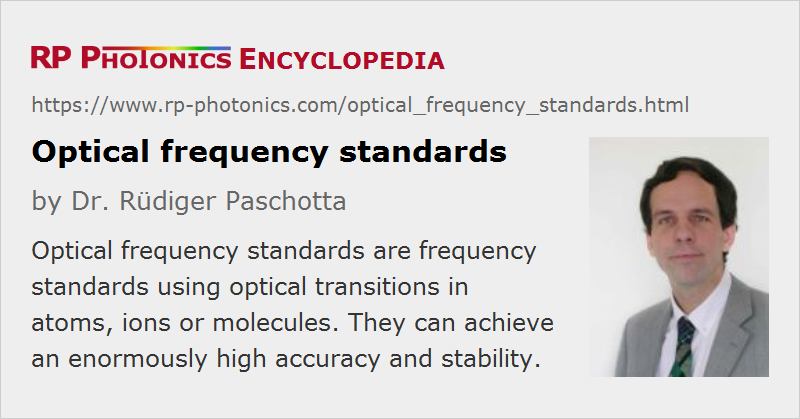

Optical Frequency Standards
Definition: frequency standards using optical transitions in atoms, ions or molecules
More general terms: frequency metrology instruments, optical metrology instruments
German: optische Frequenzstandards
How to cite the article; suggest additional literature
Author: Dr. Rüdiger Paschotta
Frequency standards are devices for producing or probing frequencies. Among all physical quantities, the frequency (or time) is the one which can be measured with by far the highest precision. Optical frequency standards are required e.g. for optical clocks, but also for optical fiber communications.
Active and Passive Frequency Standards
An active optical frequency standard is a kind of laser source emitting light with a very well-defined and known optical frequency, or sometimes a set of a few or even many well-defined optical frequency components in a frequency comb. Combined with an optical clockwork, such a frequency standard can form the basis of an optical clock. Other application areas of ultraprecise optical frequency standards are high-precision laser spectroscopy, global positioning systems, tests of the theory of relativity, and gravitational wave detection.
A passive optical frequency standard is a passive device with a well-defined frequency response, which can be used to build an active standard. Important examples are high-Q reference cavities and devices such as multipass gas cells for probing certain optical transitions.
Standards Based on Optical Transitions
An optical frequency standard is usually based on some optically probed electronic transition (usually a forbidden transition) with narrow bandwidth of certain atoms (e.g. Ca, Rb, Sr, Yb, Mg, or H), ions (Hg+, Sr+, Yb+, In+, Al+), or molecules (I2 = iodine, CH4 = methane, C2H2 = acetylene). This transition is used to stabilize the frequency of a single-frequency laser to the transition frequency. In order to reduce inhomogeneous broadening by thermal movement (Doppler broadening) and collisions, the particles' density and relative velocities have to be minimized. One possibility is to keep the particles in a trap (e.g. a Penning trap or an optical trap) within a vacuum chamber and to apply laser cooling in order to reduce the temperature strongly. This allows for very precise spectroscopic measurements on the clock transition. Alternatively, such measurements can be done on laser-cooled atom beams. Simple gas cells, probed e.g. with Doppler-Free laser absorption spectroscopy, are used when a lower precision is sufficient.
In the future, it may even become possible to use certain low-energy nuclear transitions, for example of thorium 229 ions, in order to obtain still higher timing accuracies [14].
To serve well in a high-precision optical atomic clock, an atom, ion or molecule should meet a number of requirements:
- The clock transition should have a very narrow linewidth (high Q factor).
- The optical clock frequency should be convenient, so that a suitable interrogation laser is available and further processing (for example the connection to an optical clockwork) is convenient.
- There should be other transitions suitable for laser cooling.
- The clock transition should be very insensitive to external disturbing factors such as electric or magnetic fields.
In the case of ions, it is often advantageous to use only a single ion in order to remove disturbances from ion–ion interactions and let the ion sit exactly at the center of the trap. Laser cooling in a trap down to the quantum-mechanical ground state of the ion's motion is then often possible. Interrogation of the clock transition is possible while the trap potential is turned on. Single-ion frequency standards are nearly free from systematic frequency shifts. However, the signal-to-noise ratio for the interrogation is fairly small with a single particle. This is detrimental for the stability of the frequency standard, because short-term deviations of the oscillator can not be well suppressed.
Neutral atoms can be used in much larger numbers, such as a million, to improve greatly the signal-to-noise ratio, thus allowing for very high stability of the frequency standard. However, collisions between the atoms lead to uncontrollable frequency shifts. Also, the magneto-optical trap often has to be switched off while interrogating the clock transition, because the light field of the trap introduces systematic frequency shifts which are difficult to eliminate. Switching off the trap limits the interaction time and introduces Doppler-related frequency shifts. These problems can be solved by loading the atoms into an optical lattice [8, 12], as can be generated with superimposed laser beams, and by operating the trap with an optical frequency which is adjusted such that it its effects on the upper and lower energy level exactly cancel [12]. Such an optical lattice clock allows the systematic frequency shifts to be largely eliminated.
Reference Cavities as Flywheel Oscillators
As the signal-to-noise ratio for the interrogation of a weak clock transition is typically small (particularly for ion traps), it is important to use a well-stabilized laser as a flywheel oscillator. The laser is typically stabilized to a stable reference cavity with high Q factor, which gives good short-term stability (and can itself be considered as a frequency standard). The clock transition is then used to provide the long-term stability, which the cavity can not guarantee due to various kinds of drifts.
Accuracy, Precision, Stability
The terms accuracy, precision and stability are well distinguished in frequency metrology (and other areas of metrology):
- A high accuracy means that the produced frequency, as measured by averaging over longer times, accurately matches the specified frequency.
- A high precision means that repeated frequency measurements result in values which have a small standard deviation, i.e. which stay close to their mean value.
- A high stability means that the produced frequency exhibits only weak drifts.
As an example, single-ion frequency standards can be very accurate and stable, but are generally inferior to standards based on atomic clouds in terms of precision.
Suppliers
The RP Photonics Buyer's Guide contains 6 suppliers for optical frequency standards. Among them:
Questions and Comments from Users
Here you can submit questions and comments. As far as they get accepted by the author, they will appear above this paragraph together with the author’s answer. The author will decide on acceptance based on certain criteria. Essentially, the issue must be of sufficiently broad interest.
Please do not enter personal data here; we would otherwise delete it soon. (See also our privacy declaration.) If you wish to receive personal feedback or consultancy from the author, please contact him e.g. via e-mail.
By submitting the information, you give your consent to the potential publication of your inputs on our website according to our rules. (If you later retract your consent, we will delete those inputs.) As your inputs are first reviewed by the author, they may be published with some delay.
Bibliography
| [1] | N. V. Goldovskaya et al., “Possibility of establishment of a quantum frequency standard for the visible range using an intercombination spectral transition in the ytterbium atom”, Sov. J. Quantum Electron. 12 (12), 1659 (1982), doi:10.1070/QE1982v012n12ABEH006318 |
| [2] | T. Udem et al., “Absolute optical frequency measurement of the cesium D-1 line with a mode-locked laser”, Phys. Rev. Lett. 82 (18), 3568 (1999), doi:10.1103/PhysRevLett.82.3568 |
| [3] | B. C. Young et al., “Visible lasers with subhertz linewidths”, Phys. Rev. Lett. 82 (19), 3799 (1999), doi:10.1103/PhysRevLett.82.3799 |
| [4] | S. A. Diddams et al., “An optical clock based on a single trapped 199Hg+ ion”, Science 293, 825 (2001), doi:10.1126/science.1061171 |
| [5] | T. Udem et al., “Optical frequency metrology”, Nature 416, 233 (2002), doi:10.1038/416233a |
| [6] | A. Brauch and H. R. Telle, “Frequency standards and frequency measurement”, Rep. Prog. Phys. 65, 789 (2002), doi:10.1088/0034-4885/65/5/203 |
| [7] | M. Eichenseer et al., “Towards an indium single-ion optical frequency standard”, J. Phys. B 36, 553 (2003), doi:10.1088/0953-4075/36/3/313 |
| [8] | H. Katori et al., “Ultrastable optical clock with neutral atoms in an engineered light shift trap”, Phys. Rev. Lett. 91 (17), 173005 (2003), doi:10.1103/PhysRevLett.91.173005 |
| [9] | L.-S. Ma et al., “Optical frequency synthesis and comparison with uncertainty at the 10−19 level”, Science 303, 1843 (2004), doi:10.1126/science.1095092 |
| [10] | St. A. Webster et al., “Subhertz-linewidth Nd:YAG laser”, Opt. Lett. 29 (13), 1497 (2004), doi:10.1364/OL.29.001497 |
| [11] | S. A. Diddams et al., “Standards of time and frequency at the outset of the 21st century”, Science 306, 1318 (2004), doi:10.1126/science.1102330 |
| [12] | M. Takamoto et al., “An optical lattice clock”, Nature 435, 321 (2005), doi:10.1038/nature03541 |
| [13] | C. W. Chou et al., “Frequency comparison of two high-accuracy Al+ optical clocks”, Phys. Rev. Lett. 104 (7), 070802 (2010), doi:10.1103/PhysRevLett.104.070802 |
| [14] | C. J. Campbell et al., “Single-ion nuclear clock for metrology at the 19th decimal place”, Phys. Rev. Lett. 108 (12), 120802 (2012), doi:10.1103/PhysRevLett.108.120802 |
| [15] | S. Hirata et al., “Sub-hertz-linewidth diode laser stabilized to an ultralow-drift high-finesse optical cavity”, Appl. Phys. Express 7, 022705 (2014), doi:10.7567/APEX.7.022705 |
| [16] | F. Riehle, Frequency Standards, Wiley-VCH Verlag GmbH, Weinheim (2004) |
See also: optical frequency, optical clocks, optical clockworks, frequency metrology, forbidden transitions, laser cooling, reference cavities
and other articles in the category optical metrology
|  |
If you like this page, please share the link with your friends and colleagues, e.g. via social media:
These sharing buttons are implemented in a privacy-friendly way!